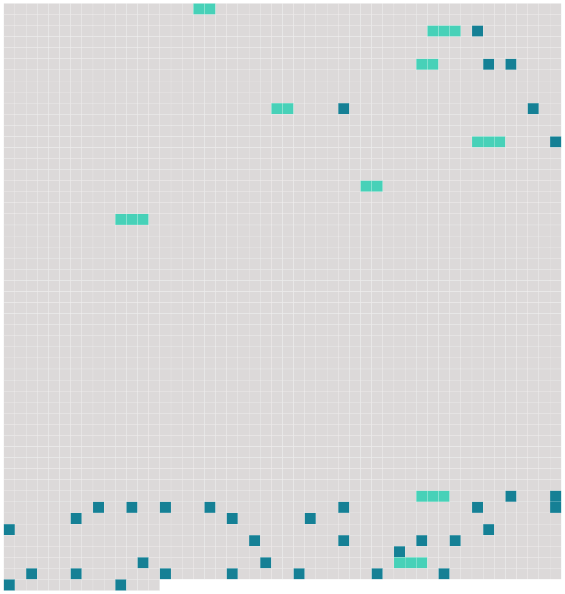

Longueur nb maillons : 45 mentions |
|
Ils arrivèrent dans un jardin, où deux enfants à l’ air maussade, un garçon et [une fille] , à peu près du même âge que Christophe, semblaient se bouder l’ un l’ autre. [6 phrases]
Christophe ne répondit rien, pétrifié : il était intimidé jusqu’ aux larmes, surtout par [la petite fille] , [qui] avait des nattes blondes, une jupe courte, et les jambes nues. [9 phrases] [La fillette] fit la moue et [souffla] à [son] frère – Christophe l’ entendit, – que c’ était un petit pauvre. [9 phrases] [La fillette] était particulièrement acharnée. [Elle] remarqua que Christophe avait peine à courir, à cause de ses vêtements étroits ; et [elle] eut l’ idée raffinée de lui faire accomplir des sauts d’ obstacle. [7 phrases] Alors [la petite fille] l’ appela lâche et [dit] qu’ il avait peur. [9 phrases] … Christophe essaya de se relever ; le petit bourgeois le poussa et le fit retomber ; [la fillette] lui donna des coups de pied. [4 phrases]
Il s’ arc-bouta sur ses genoux et ses mains, se secoua comme un chien, fit rouler ses persécuteurs ; et, comme ils revenaient à la charge, il fonça la tête baissée sur eux, gifla [la petite fille] , et jeta d’ un coup de poing le garçon au milieu d’ une plate-bande. [67 phrases] C’ était surtout [la petite fille] qu’ il revoyait, avec [ses] yeux brillants, [son] petit nez levé d’ une façon dédaigneuse, [ses] cheveux sur [ses] épaules, [ses] jambes nues et [sa] parole enfantine et poseuse. Il tressaillit, en croyant réentendre [sa] voix. Il se rappelait combien il avait été stupide avec [elle] ; et il se sentait contre [elle] une haine farouche ; il ne [lui] pardonnait pas de l’ avoir humilié, il était dévoré du désir de [l’] humilier à son tour, de [la] faire pleurer. [1 phrases] Il n’ y avait nulle apparence qu’ [elle] se souciât jamais de lui. [1 phrases] Il établit donc qu’ il était devenu très puissant et glorieux ; et il décida en même temps qu’ [elle] était amoureuse de lui. [1 phrases] [Elle] se mourait d’ amour ; mais il [la] dédaignait. Quand il passait devant [sa] maison, [elle] le regardait passer, cachée derrière les rideaux ; et il se savait regardé ; mais il feignait de n’ y prendre pas garde, et il parlait gaiement. Il quittait même le pays et voyageait, au loin, afin d’ augmenter [sa] peine. [2 phrases] – [Elle] , pendant ce temps, tombait malade de chagrin. [Sa] mère, l’ orgueilleuse dame, venait le supplier : « [Ma pauvre fille] se meurt. [2 phrases] [Elle] était couchée. [Elle] avait la figure pâle et creusée. [Elle] lui tendait les bras. [Elle] ne pouvait parler ; mais [elle] lui prenait les mains et les [baisait] en pleurant. Alors il [la] regardait avec une bonté et une douceur admirables. Il [lui] disait de guérir, et consentait à ce qu’ [elle] l’ aimât. |
 |
Il est possible de télécharger la ressource sur la page Ortolang |
Si vous avez des questions ou vous voyez des erreurs, merci d'envoyer un mail à silvia.federzoni89@gmail.com |